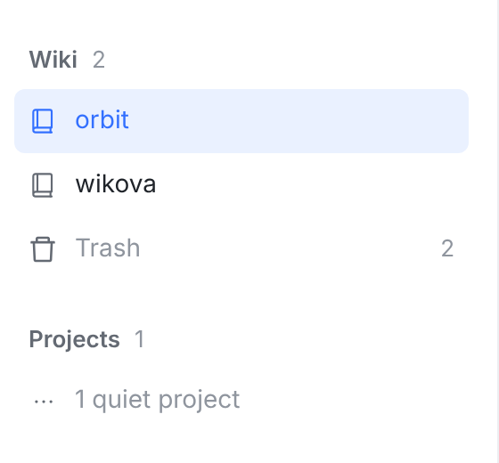
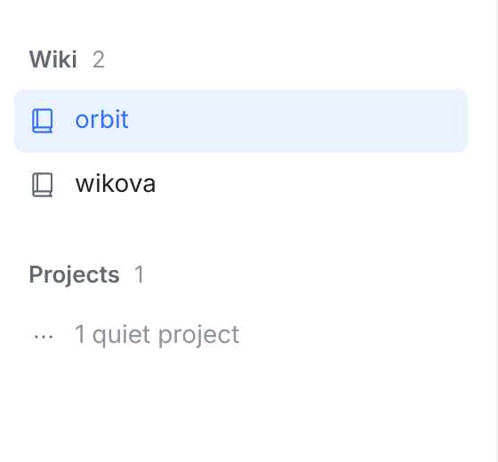
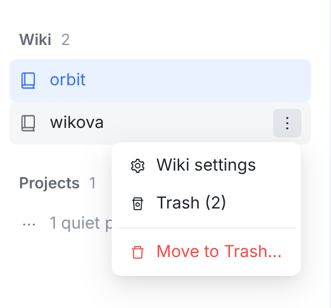
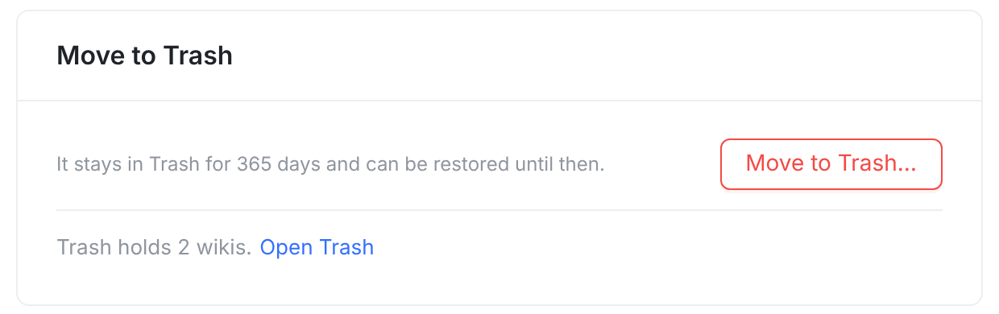
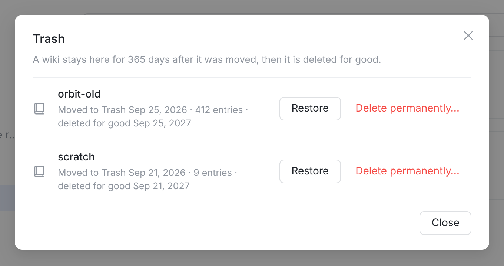

全部是真实页面截图：同一份 main 代码构建两次（今天 / 原型，原型差异见 prototype.patch），用的是 ui-migration fixtures，外加 2 个 wiki、Trash 里放 2 个。





Web 侧栏去掉 Trash 行，什么都不补（③ 不做，prototype.patch 只是当时的方案 A 原型）；iOS / macOS / Android 的 wiki 选择器里也去掉 Trash。三个客户端都只从 Wiki settings 末尾，以及没有 wiki 时的首个 wiki 卡片进入 Trash。
| 问题 | 方案 A | 方案 B |
|---|---|---|
| Web 侧栏 | 去掉 Trash 行，wiki 行菜单里加 “Trash (2)”（③）。推荐 | 去掉 Trash 行，什么都不补，只靠 Settings（④）和首个 wiki 卡片 |
| iOS / macOS / Android | wiki 选择器下面那一行 Trash 也一起去掉，只留在 Wiki settings 末尾（它们本来就有这个入口）。推荐 | 原生端这次不动，只改 Web |
TasksSidePanel.tsx 删除 Trash 行，wiki 行菜单加一项，改对应测试，约 20 行（patch 就在本目录）。